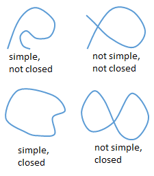
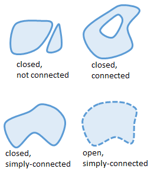

On this page, you will learn to:
- Determine if a vector field is conservative.
- Determine potential functions for conservative fields.
Before we get to the fundamental theorem over vector fields, we need to look at conservative vector fields a bit more. We have already seen that a vector field \(\vec{F}\) is conservative if there exists a potential function \(f\) such that \(\vec{F} = \nabla f\). So for a given vector field \(\vec{F}\), how do we (1) determine if \(\vec{F}\) is conservative, and (2) determine the potential function \(f\) if it is conservative?
In order to answer these questions, we first need to define a few terms describing the types of curves and regions that we could find in the \(xy\)-plane.
| Definition | Illustration |
|---|---|
|
A curve is simple if it does not cross or intersect itself. A curve is closed if its ending point and starting point are the same. |
 |
|
A region is connected if it is a single region, even though it may contain holes. A region is simply-connected if it does not have any holes or gaps. A region is open if it doesn't constain any of its boundary points. |
 |
Now that we have laid that foundation, how do we determine if a vector field \(\vec{F}\) is conservative? Well, recall that the gradient of a function is the vector formed by the first partial derivatives of the functon, thus a conservative is a gradient field, i.e., \(\vec{F} = \nabla f = \langle f_x,f_y \rangle\). Also, the mixed second partial derivatives will be equal if \(f\) is continuous, i.e. \(f_{xy} = f_{yx}\). So, given a vector field \(\vec{F} = \langle P,Q \rangle\) where \(P = f_x\) and \(Q = f_y\), then \(\frac{\partial P}{\partial y} = f_{xy}\) and \(\frac{\partial Q}{\partial x} = f_{yx}\), and thus the continutiy of \(f\) tells us that \(f_{xy} = f_{yx} \implies \frac{\partial P}{\partial y} = \frac{\partial Q}{\partial x}\).
Testing for Conservative Fields: For a given vector field \(\vec{F} = \langle P,Q \rangle\) defined over an open, simply-connect region \(D\) in the \(xy\)-plane where \(P\) and \(Q\) both have continuous first-order partial derivatives, \(\vec{F}\) is conservative if for all points in \(D\) the following relationship holds.
\[\frac{\partial P}{\partial y} = \frac{\partial Q}{\partial x}\]Note that is test only works for vector fields in \(\mathbb{R}^2\).
Once we determine that a vector field is conservative, how do we find the potential function? Well, from the above theorem, if \(\vec{F} = \langle P,Q \rangle\) then we know \(P = f_x\) and \(Q = f_y\) since \(\vec{F}\) is a gradient field. Then \(f\) is the potential function and we can determine \(f\) by integrating \(P\) and \(Q\) with respect to \(x\) and \(y\), respectively.
FTC & Line Integrals
Recall the Fundamental Theorem of Calculus from Calculus I, which says the definite integral of a continuous function could be determined by just computing the values of the antiderivative at the endpoints, where \(F' = f\).
\[\int_{a}^{b}\,f(x)~dx = F(b)-F(a)\]We can extend this idea to evaluting line integrals.
FTC for Line Integrals: Given a smooth curve \(C\) parameterized by the vector functon \(\vec{r}(t)\) for \(a \le t \le b\) and a conservative field \(\vec{F}\) with differentiable function \(f\) such that \(\vec{F} = \nabla f\) is continuous on \(C\), the line integral of \(\vec{F}\) over \(C\) can be computed using only the endpoints, \(A = \vec{r}(a)\) and \(B = \vec{r}(b)\).
\[\underset{C}{\mathop \int} \, \vec{F} \cdot \, d\vec{r} = f(B) - f(A)\]The following videos will demonstrate three different methods to evaluating line integrals on a vector field depending on whether the field is conservative or not.
Let's summarize all we know about conservative fields.
- Conservative fields and gradient fields are the equivalent.
- A conservative field \(\vec{F}\) has a potential function \(f\) such that \(\vec{F} = \nabla f\).
- We can use the FTC to evaluate line integrals over conservative fields.
- Line integrals over conservative fields are path independent, which means that the line integrals over any two curves \(C_1\) and \(C_2\) having the same end points will be equal. In other words, \(\int_{C_1} \vec{F} \cdot \, d\vec{r} = \int_{C_2} \vec{F} \cdot \, d\vec{r}\).
- If \(C\) is a closed curve, then \(\oint_{C} \vec{F} \cdot \, d\vec{r} = 0\).